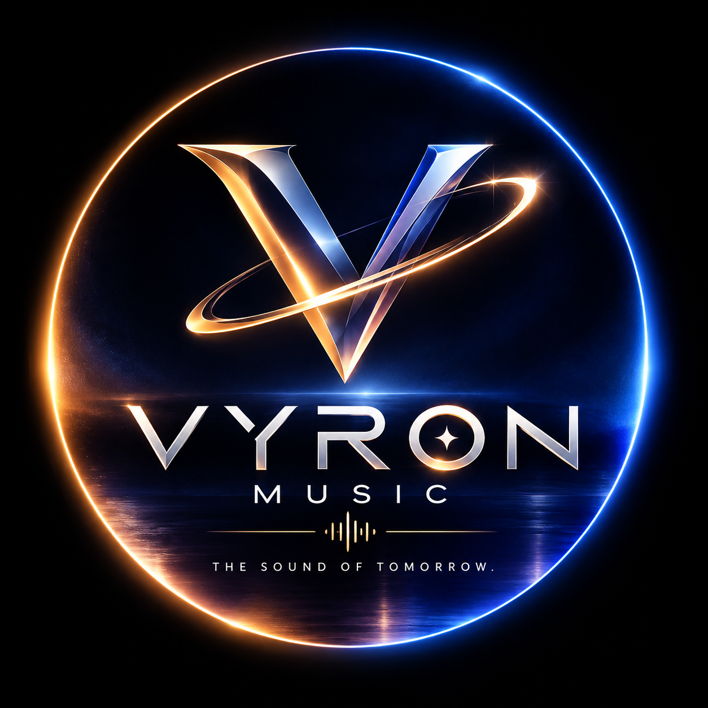

VYRON MUSIC
VYRON MUSIC
THE SOUND OF TOMORROW
ABOUT
THE SOUND OF TOMORROW
以「THE SOUND OF TOMORROW」為核心，串聯流行音樂、兒童音樂、視覺與新世代內容，建立跨平台、面向全球的原創音樂品牌。
VISION
Music Beyond Borders.
以高辨識度音樂、品牌視覺與跨平台內容，持續拓展全球聽眾與下一代音樂體驗。
OFFICIAL CHANNELS
官方平台
GLOBAL DISTRIBUTION
讓音樂走向全球。
VYRON MUSIC 透過 DistroKid 進行數位音樂發行，作品可依每次發行設定送往全球主要串流、商店與社群音樂服務。
Spotify
Apple Music
iTunes
YouTube Music
Amazon Music
TikTok
Instagram
Facebook
Deezer
TIDAL
Pandora
iHeartRadio
Luna
CapCut
Snapchat
NetEase Music
QQ Music
Kugou Music
Kuwo Music
WeSing
JioSaavn
Anghami
Boomplay
Audiomack
Qobuz
JOOX
TouchTunes
Pretzel
Claro Música
MassiveMusic
LEADERSHIP
品牌團隊
以音樂、視覺與新世代內容為核心，建立可跨語言、跨市場發展的原創音樂品牌。
FOUNDER
王柏凱 Eric Wang
創辦人 · VYRON MUSIC